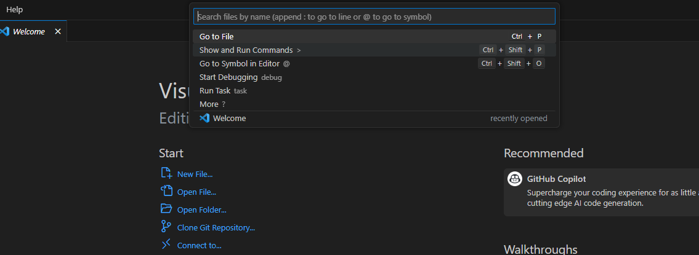
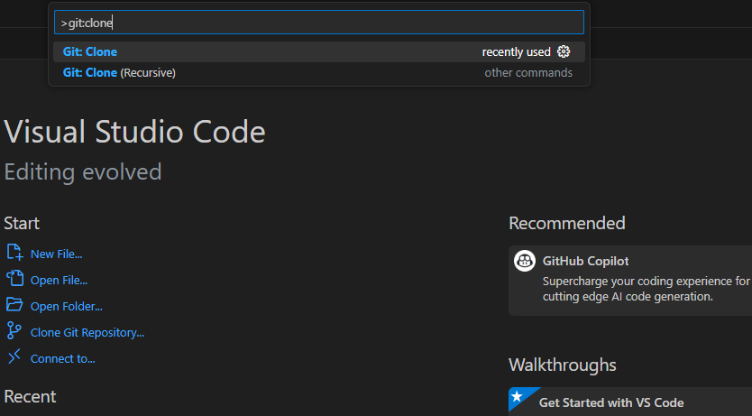
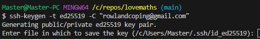
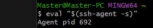
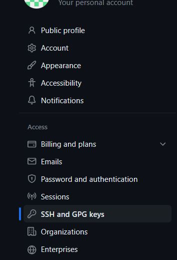
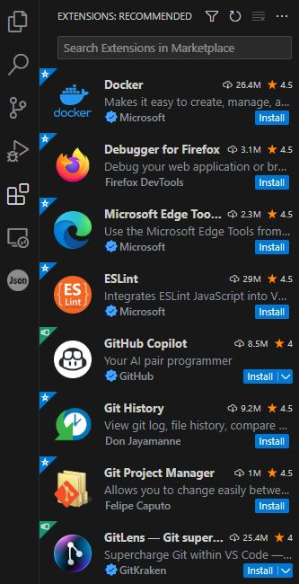
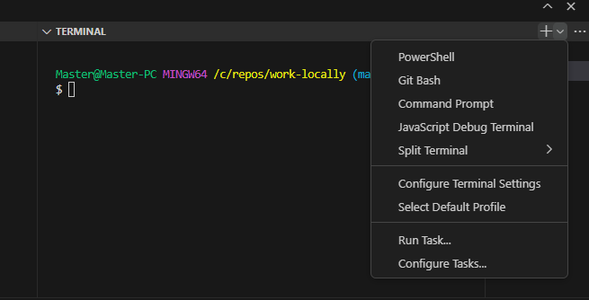

Fast Guide to Working Locally in Windows with VS Code
Hi folks – having worked through this excellent youtube guide from Jose, here is a step by step process for quickly setting up locally with VS code, including the annoying bits.
I think this will be a useful step for working on P2, just giving that extra flexibility. And who knows, one day I may even style this page.
Getting Set Up
Step 1 - Install VS Code
- You can download it here
- I’ve installed a bunch of extensions but forgotten what they all are. You don’t need anything to get set up but I’ll suggest a few at the end which make life better.
Step 2 - Install Git
- Go to their website
- Navigate to the downloads page and download the latest version
- There will be a bunch of options, and I'm not going to lie I have no idea with most of them.
I chose to install Gitbash because it's useful having a decent ui and it integrates with VS Code which adds functionality to your terminal (more on that later) - Once it has installed check the 'launch Gitbash' box. Let's get it set up!
Step 3 - Set up Git
So that you can interact with cloud services, the first step with Git is to tell it who you are. It's a pretty simple process!
- If you haven't launched Gitbash already, search for it on your start menu then launch it.
- Set your name: git config --global user.name “YOURUSERNAME”
- Set your email: git config –global user.email you@youremail.com
I used the same details as for GitHub. I’m not sure if it matters or not, but it makes sense. - Set default name for main branch: git config –global init.default branch main
Step 4 - Install Python
I don't think you really need to install Python yet, so feel free to skip this step. I feel sure I'll need it later though!
- Go to the Python download page
- Install Python
Step 5 - Create local folder for your repos
- Create a folder somewhere convenient. I created the folder C:\\repos\. No way I'm forgetting where that is.
Step 6 - Create / Clone your GitHub repo
I realised when I decided to do this write-up that it's actually a million times easier than I thought. At least that.
- If you are using a brand new repo, then create it first in GitHub (you can also clone any exisitng repo to work on locally).
- Load up VS CODE, ignore any messages, and click in the search bar at the top of the screen
- Click 'show and run commands'
 - type git:clone into the search bar and select the result; it should give you an option to clone a repo from GitHub
 - When you select this option VS Code will prompt you to sign in to GitHub - you'll need to sign in via your GitHub account. You *should* see a drop-down list of your GitHub repos.
- Select the repo you want to clone locally, navigate to the repos folder you created earlier, then click 'Select Repositary as Destination
- You can then choose to add it to VS Code as a folder or workspace - I'm not sure it matters!
- View your files in all their glory and feel deeply satisfied with yourself.
Authenticating Your Account
What you might notice if you skip ahead is although git will track your changes just like on a cloud IDE, you can’t push any of those changes to the repo. I heard a rumour you might be able to authenticate via browser, somehow, but if that doesn’t work then this is where it gets tricky.
It definitely comes into the category of ‘easy when you know how’. Remembering how has definitely come into the category of ‘wishing I hadn’t signed out in the first place’. Don’t worry if you don’t know what any of this stuff means or what it does. I don’t either.
Step 1 - Set up an SSH Private Key on Your Machine
The full guide from GitHub is here for reference.
- In Gitbash, create a new SSL key: ssh-keygen -t ed25519 -C "you@youremail.com"
- When it prompts which location to save the key in, just press enter to use the default.
 - It will ask you for a passphrase – if you choose to enter one you're on your own with how that works!
- Start the SSH agent on your PC: eval "$(ssh-agent -s)"
 - Add your SSH private key to the SSH agent: ssh-add ~/.ssh/id_ed25519
Step 2 - Add the SSH Public Key to Your Account on GitHub
The full guide from GitHub is here for reference.
- Open Gitbash (assuming you closed it). If you like you could also use the terminal in VS Code!
- Copy the public key to your clipboard: clip < ~/.ssh/id_ed25519.pub
You can now paste this key wherever you need to - I pasted it temporarily in notepad for safekeeping! - Log into GitHub and click on your profile avatar at the top right of the page, then click 'settings'
- On the left-hand side-bar, click 'SSH and GPG keys' (This, annoyingly, is not what the guide says!)
 - Click 'NEW SSH KEY'
- Paste your newly minted public SSH key here and save it, using an amusing name. Well, why not.
- You should now be able to push commits to your GitHub repo from VS Code via the terminal (open the terminal by clicking 'Terminal' and selecting a terminal).
If you cannot, then something has gone wrong.
Useful Things to Know
I do not know everything. It’s official. For example, when using the command “python3 –m http.server” I have not been able to get it working in Windows, unless I specify the port, and that becomes a long story. There is probably some way of configuring it, but that’s a p3 problem. What I have discovered is a few handy extensions that work around this and actually make life better.
VS Code Extensions
These do everything from enabling handy shortcuts to tucking you in bed and bringing you a cup of tea in the morning. Jose linked a few which I’ve also included below, but here’s what I’ve found:
- Access extensions by clicking the extensions icon on the left of the screen (4 squares). Then it works much like a web browser, you simply type in what you’re after.
 - I have found “open in browser” great for testing. Press ALT-B at any time to open the current file in a browser. It avoids a lot of faffing for browser-based projects like P1 and P2.
- Node.js is pretty essential to be able to follow the course as it’s used in the ‘Advanced Javascript’ module.
- I've also installed a bunch of Python stuff I've never used.
Jose's Suggestions
- Live Server
- Auto Rename Tag
- CSS Peek
- Error Lens
- indent-rainbow
- IntelliSense for CSS class names in HTML
Terminal Options
Whilst the terminal seems to work whatever version you use, it is possible to select Gitbash as your terminal. this video explains a bit more about its functionality better than I could!
What I didn’t realise until yesterday was that you can open multiple terminal instances. So if you are running a local server off python, or anything else for that matter, you can open another instance of the terminal to commit changes!
